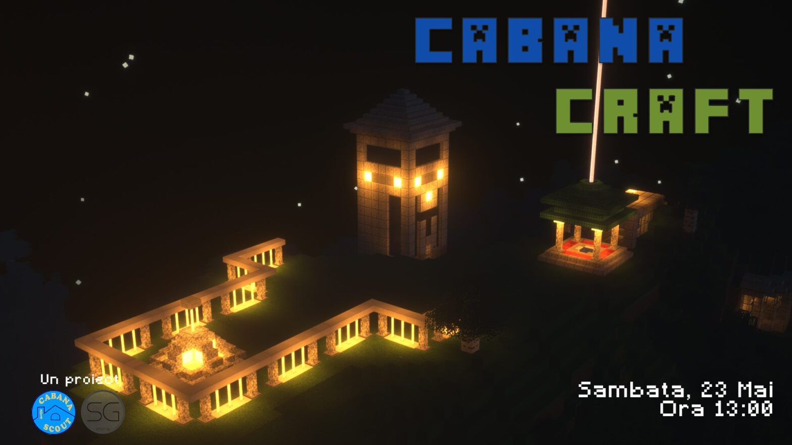

🎮 Camp online • Minecraft
CabanaCraft — primul camp online!

„A fost greu, a fost ușor, nu mai contează, a fost."
Idee prezentată la Adunarea Generală a centrului, construită cu un prieten pe Minecraft — sandbox open-world — după mai multe reprize de „joacă". Așa s-a născut CabanaCraft: eveniment online național cu 82 de cercetași din 16 centre locale. Serverul a rămas apoi deschis cercetașilor din toată lumea.
Povestea porcilor spinoși (era glaciară): cu spini te aperi de frig, dar îi rănești pe ceilalți; fără spini, îngheți. Lecția: acceptăm rănile mici unii de la alții pentru căldura de a fi împreună.
„Totul va fi bine!"
În paralel, Filip dădea bacalaureatul și intra la facultate. Respect!